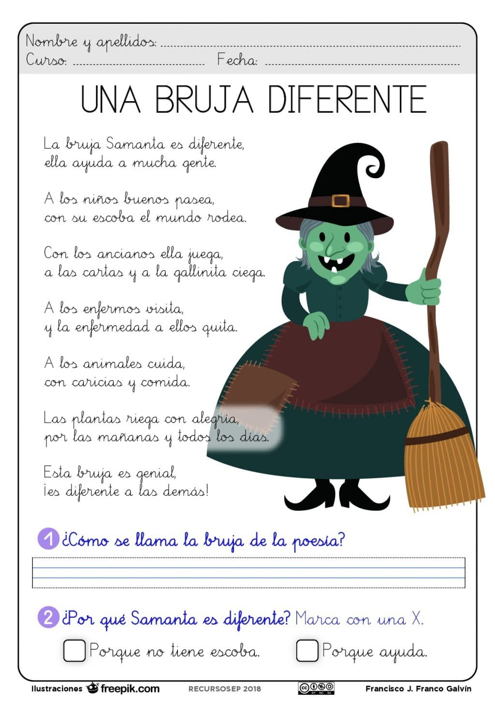
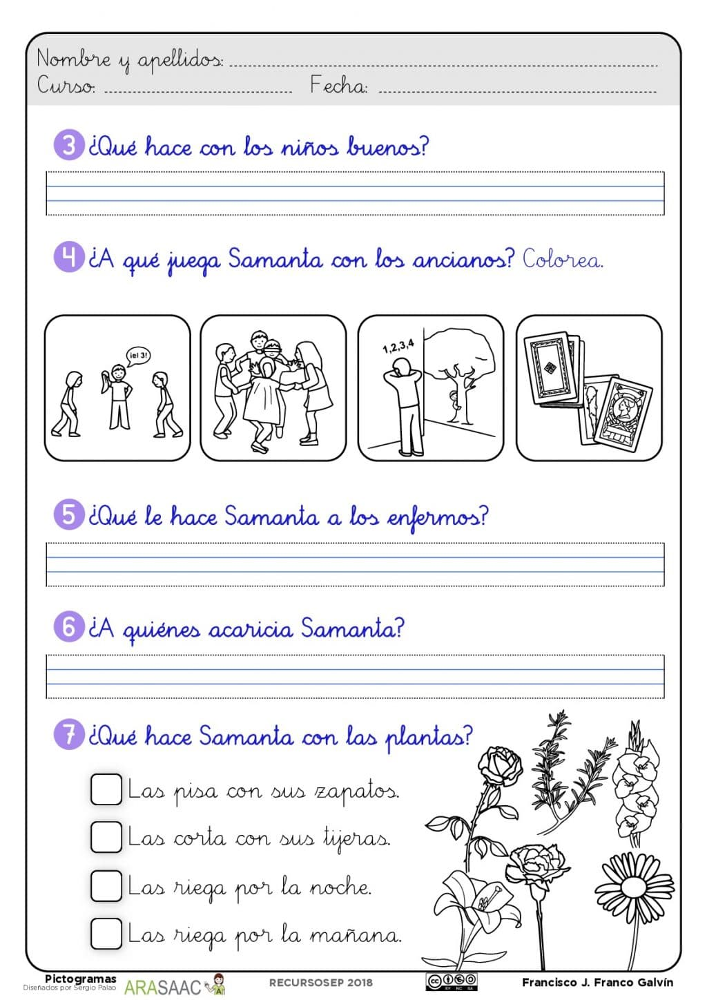
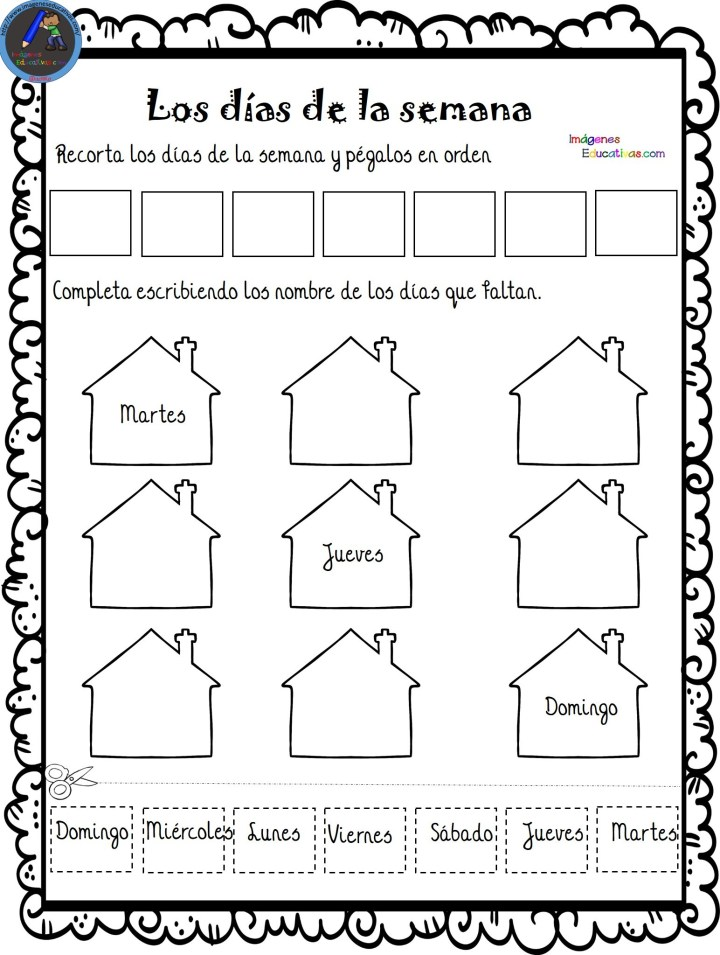
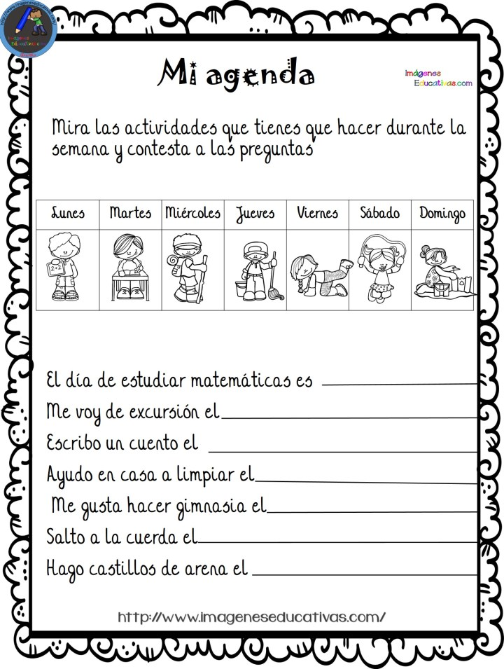
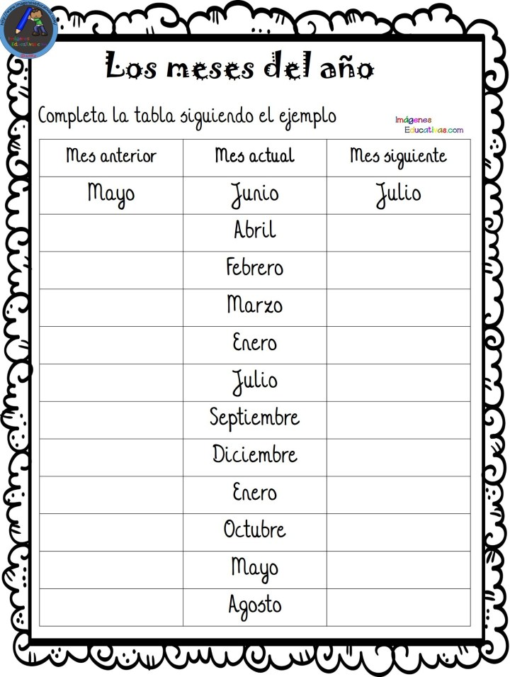
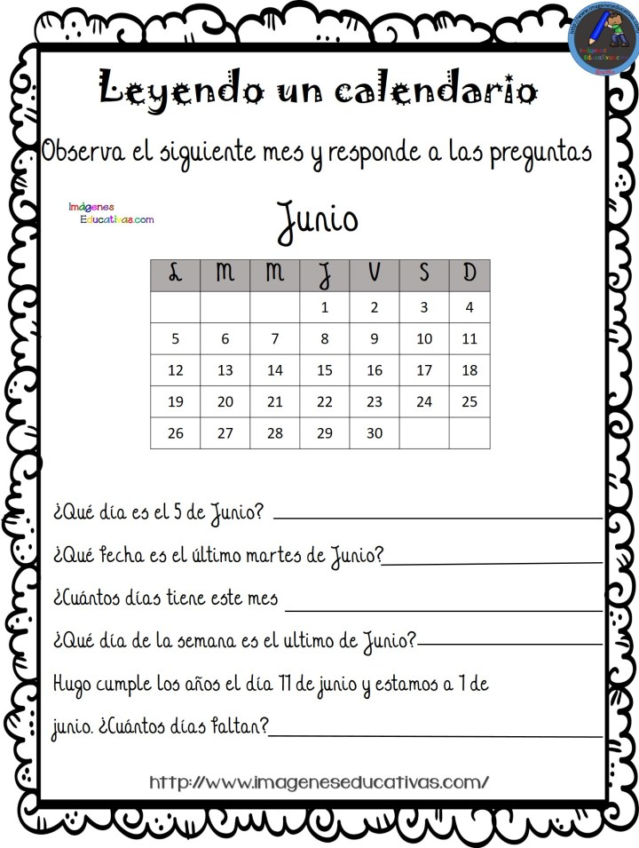

[Escriba texto]
LENGUA: TODOS LOS DÍAS 15 MINUTOS DE LECTURA MÍNIMO.
MATEMÁTICAS: Las cuentas se realizarán en vertical pese a que aquí aparezcan en horizontal.
LUNES 8:
Repasar vocabulario pág. 54 y 55 del libro de naturales.
Ej. 1 pág. 41 del libro de naturales.
Inglés (Pearson):
Repasar vocabulario pág. 82 y 84 de student book.
Ej. 20, 21 y 22 pág 90 y 91 del activity book.
Lengua (Anaya):
Página 216-217, primero escuchar el audio e ir leyendo a la vez .
Ver vídeo.
En el cuaderno, escribir cuatro oraciones, una con ge, una con gi, una con je y otra con ji.
Matemáticas (Anaya):
Páginas 204-205, realizar la actividad interactiva de la página 205 y luego las actividades del libro.
Sumas: 45+22+7= 38+10+15= 71+4+17=
Restas: 95-44= 86-35=
MARTES 9:
Natural Science (Anaya):
Copiar ej. 1 pág. 41 en un folio y leer un par de veces.
Ej. 5 pág. 99 del libro de natural science.
Inglés (Pearson):
Ej. 14 pág. 71 activity book.
Lengua (Anaya):
Página 218, volver a escuchar el audio de la página 216. Realizar la actividad interactiva y las del libro.
Leer siguiente texto y realizar las actividades de comprensión lectora.


Matemáticas (Anaya):
Repasar los días de la semana y los meses del año, en voz alta.
Página 206, realizar las actividades del libro, poco a poco con la explicación del vídeo diario.
En el cuaderno:
Ordena de menor a mayor, usando <.
73-48-50-22-10-61
Sumas: 38+17+6= 55+27+30=
Restas: 74-32= 48-17=
MIÈRCOLES 10:
Natural Science (Anaya)
Volver a leer el vocabulario pág. 54 y 55 del libro de naturales.
Picture dictionary pág. 100 y 101 del libro de natural science.
Cambridge extraescolar:
Pincha este enlace.
https://www.liveworksheets.com/c?a=s&g=1%C2%BA%20A&s=Ingles&t=ijidmxj6to&l=ov&i=toozn&r=sg
Haz la ficha y pincha “TERMINADO”.
Rellena tu nombre completo.
Dale a enviar.
Lengua (Anaya):
Página 219.
Ver vídeo del cuento del abecedario: https://www.bing.com/videos/search?q=el+abecedario+cuento+para+ni%c3%b1os+aprender+y+entretener&docid=608054144922947043&mid=EDB58BE5D8A6381B5885EDB58BE5D8A6381B5885&view=detail&FORM=VIRE#
Canción del abecedario para practicar:
Realizar la actividad interactiva y las del libro.
En el abecedario de la página, rodear las vocales.
En el cuaderno, copiar el abecedario, con mayúsculas.
Matemáticas (Anaya):
Realizar las fichas:



